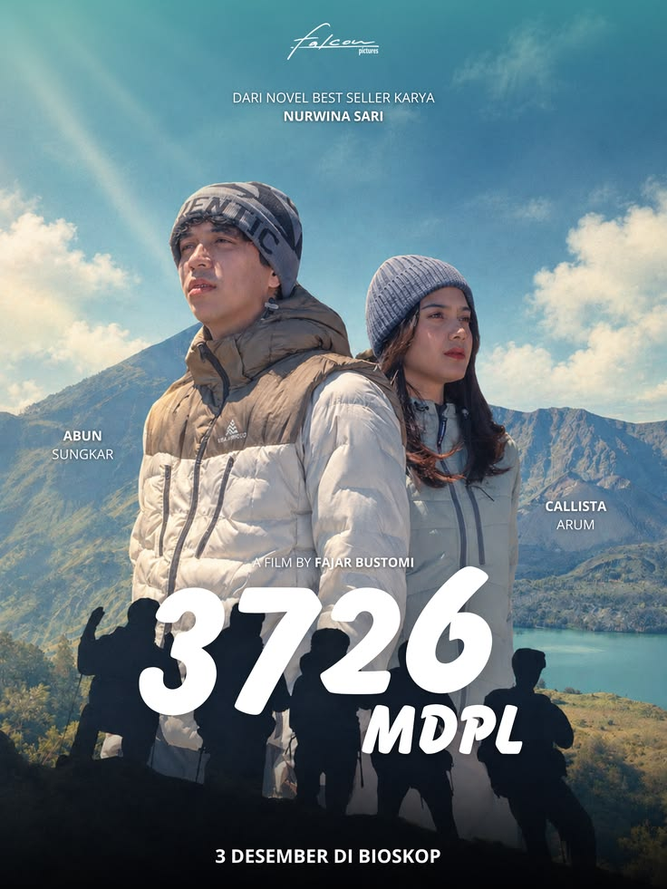
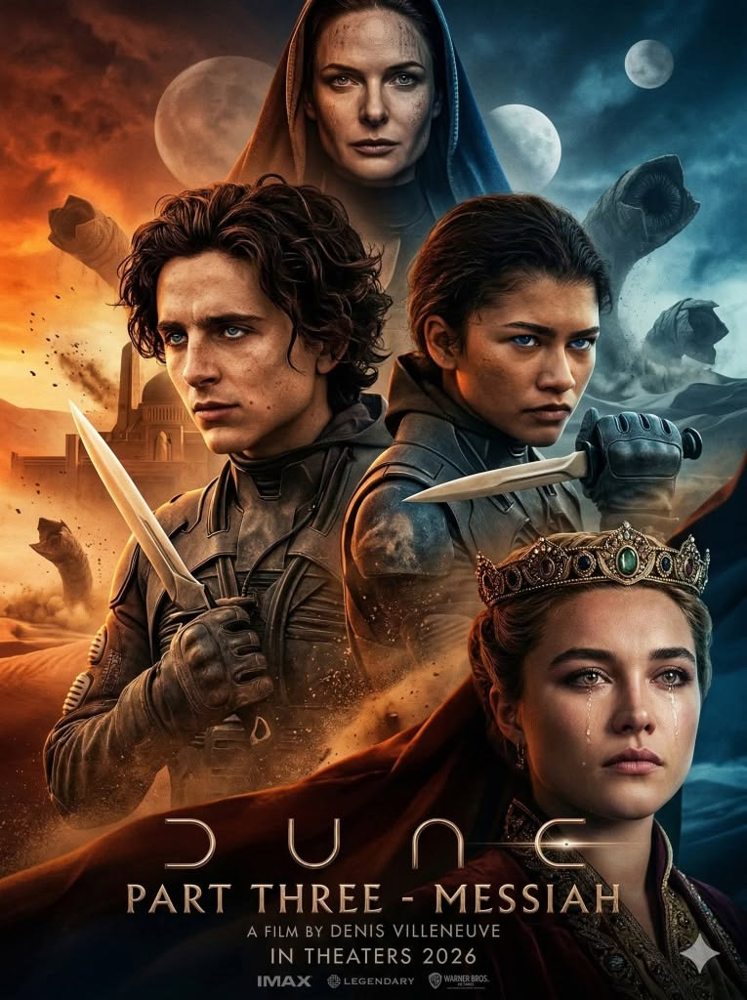
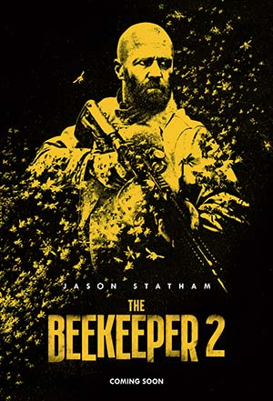

3 Des 2026
R17+

3726 MDPL
Romance, Adventure • 1j 56m • Sutradara: Fajar Bustom
Jelajahi daftar film terbaru yang akan segera tayang di layar bioskop terdekatmu.

Romance, Adventure • 1j 56m • Sutradara: Fajar Bustom

Sci-Fi, Adventure • 2j 30m • Sutradara: Denis Villeneuve

Action, Thriller • 1j 56m • Sutradara: Timo Tjahjanto

Animation, Adventure, Comedy • 1j 43m • Sutradara: John C. Donkin
Horror, Mystery • 1j 31m • Sutradara: Gandhi Fernando
Sinopsis lengkap film akan muncul di sini.